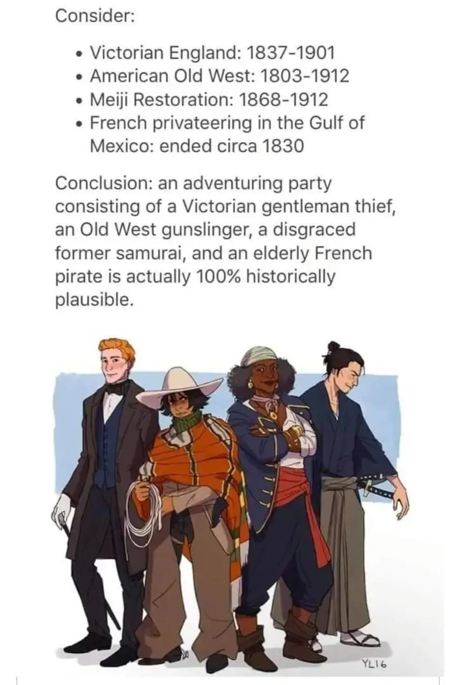

Sample Characters
FRH 1870 Party
The historical FRH cohort: four investigators from four dying worlds, moving through the occult pressures of 1870 and leaving the kind of evidence that only makes sense fifty years later.
Reader Entry
The 1870 cohort reads best as a party first and four separate sheets second. This group page keeps the historical framing visible, uses the shared party image as the front door, and then lets a reader branch into the individual members without losing the sense that these characters belong to one operating circle.
Etienne Moreau came out of the Gulf world by way of routes honest men usually discuss only after they are old enough not to fear the consequences. He has been sailor, privateer...
Core Profile
The four members of the 1870 cohort each belong to a world that is, in 1870, either ending or already ended. Etienne Moreau is the old Gulf privateer survivor - French, maritime, shaped by compass routes, cargo lies, and the kind of knowledge that traveling under multiple flags at different ports produces in a man who has managed to stay alive through all of it. Julian Ashcroft is the Victorian gentleman thief who became a criminal by studying the respectable version first, acquiring Forgery and social infiltration skills alongside his legitimate education and concluding that provenance is always an argument about power disguised as taste. Sakuma Jiro carries the exact dislocation of the Meiji Restoration - formed by a hierarchical moral grammar that has just been officially dissolved, which left him disciplined, displaced, and more observationally precise for having lost the system he was trained to serve. Silas Brent is what frontier country manufactures when it has more danger than explanation: terse, tracking-capable, accurate about weather and human character, unwilling to explain himself or wait for an explanation to be offered.
They should not cohere and they do not entirely. Their Reality Tunnels are genuinely incompatible in ways that matter across cases: Etienne reads institutional authority as theater; Julian agrees but performs the theater himself with evident enjoyment; Sakuma understands theater as a category but does not accept it as an alibi for much; Silas does not care what anyone calls it if the consequence is still that someone gets shot. What makes their archive invaluable to anyone who finds it later is exactly this: each member noticed what the others refused to acknowledge. The four competing interpretations of the same events, written in four different moral grammars, constitute a more complete record of what actually happened than any single trustworthy narrator could have produced.
The party is designed as artifact engines rather than balanced competitive sheets. Julian's Forgery capability means the archive may contain beautiful lies alongside accurate observations, and distinguishing between them is itself a clue problem. Etienne's maritime precision means route and cargo information tends to be more reliable than his personal narrative about the same events. Sakuma's reflective discipline means his entries are the most morally coherent and occasionally the most blind. Silas's terse field notes record observation without interpretation, which is often the most damning evidence in the collection. Each archival voice represents a different relationship to truth, authority, and what counts as evidence worth preserving. The 1870 party did not agree on much. They kept impeccable records of their disagreement.
For the 1923 party, the 1870 cohort is a set of predecessors rather than a rival team. Their clue trail opens backward in time: the artifacts they handled, the sites they documented, the objects they recovered and misidentified and occasionally buried in places they did not explain in the record are still out there, fifty years on, waiting to be found by investigators who understand more about the context than the 1870 cohort did. For the GM, the 1870 archive is a clue engine and a precedent layer - these cases happened before, these objects have a history, these families have been involved with this kind of thing since before the current generation was born. The 1870 cohort gives the 1923 investigators both a head start and a warning: a set of four brilliant, damaged, occasionally wrong people who did their best with what they understood, and left the rest for whoever came after.
Party Members
.jpg)
Etienne Moreau (1870 FRH)
French 1870 party member shaped by continental pressure, occult duty, and an older Europe.
Etienne Moreau came out of the Gulf world by way of routes honest men usually discuss only after they are old enough not to fear the consequences. He has been sailor, privateer...
.jpg)
Julian Ashcroft (1870 FRH)
Elegant 1870 paper-haunter, provenance thief, and social infiltrator in the historical FRH lane.
Julian Ashcroft became a criminal by studying the respectable version first. He learned early that ownership is often theater, that collections are arguments about power disguised as taste, and that one well-placed...
.jpg)
Sakuma Jiro (1870 FRH)
Disciplined 1870 party member carrying transnational history, restraint, and occult gravity.
Sakuma Jiro comes out of a world that has already ended by the time most new companions meet him. He was formed by service, hierarchy, ritual, and a moral grammar in which...
.jpg)
Silas Brent (1870 FRH)
Hard-edged 1870 party member built for danger, endurance, and historical occult conflict.
Silas Brent is the kind of man frontier country manufactures when it has more danger than explanation and no patience for either complaint or ornament. He learned truth through ground, weather, freight...
Inspiration for FRH 1870s Party
